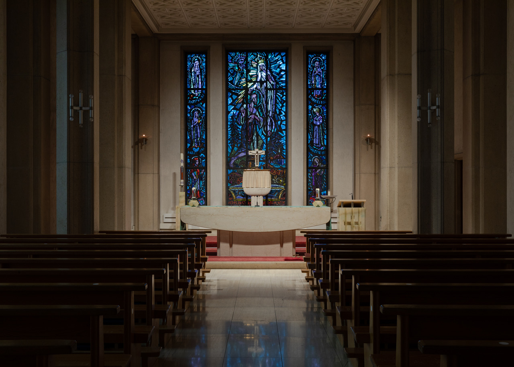

Wer die Pfarrkirche St. Martin Visp betritt, steht in der grössten Kirche des Oberwallis. Sie umfasst etwa 800 Sitzplätze. Auf dem Martiniplatz erinnert eine Brunnenfigur mit der Tat der Nächstenliebe an den Patron der Kirche: Der Soldat Martin (um 316/17–397) teilt mit dem armen frierenden Bettler seinen Mantel. In der Martinskirche sind Szenen aus dem Leben dieses weltweit bekannten Heiligen in den Glasfenstern im Chorraum zu bewundern.

Brunnenfigur «St. Martin und der Bettler», Bronze, Visp 1988, von Hans Loretan (1920-2008) aus Brig. (Bild: Diana Pfammatter).
Erste Spuren von Oberwalliser Pfarreien lassen sich im 8./9. Jahrhundert in Visp und Naters nachweisen. Bereits vor 1000 Jahren sind in Visp erste Sakralbauten zu vermuten. Mit der Verbreitung des Christentums entwickelte sich Visp am Schnittpunkt wichtiger Verbindungswege zu einer Grosspfarrei und somit zum Verwaltungszentrum der Region, die die weitläufigen Vispertäler bis nach Zermatt und ins Saastal umfasste.
Die alte Martinskirche
Das erste schriftliche Zeugnis der Pfarrei Visp stammt aus dem Jahr 1214 und nennt dabei Pfarrer Mathäus und Kaplan Wilhelmus. Die ursprüngliche Martinskirche am Felsrand hoch über dem Fluss «Vispe» kann nicht genau datiert werden. Aus alten Akten ist zu entnehmen, dass die Kirche in der Mitte des 13. Jahrhunderts unter dem Bauherrn «Herr Michael aus Visp», der zwischen 1220 bis 1262 Kaplan war, eine neue Bedachung, Glasfenster, einen neuen Altar und Chorstühle erhielt. Der Hauptaltar wurde dem heiligen Martin geweiht.
Die treibende Kraft für den Bau einer neuen Martinskirche war Pfarrer Mathias Belwalder (1648–1662), der mit seinem ansehnlichen Vermögen die Kosten des Kirchenbaus mittrug. Zwischen 1650 und 1655 erfolgte der Neubau der barocken Kirche, die etwa 300 Personen umfasste. Die Kirche erhielt auch eine neue Orgel. 1675 wurde die Martinskirche eingeweiht.
Besonders auffallend ist der 30m hohe Kirchturm mit seinem bis zu 2m starken Mauerwerk, der sich weit über das Kirchendach hinaushebt. Auf der Höhe des heutigen Turmdaches umfasste eine nochmals 12 bis 15m hohe, vermutlich aus Tuffstein geformte Kuppel, die jedoch nur auf Stichen nachzuweisen ist.
Auf der Nordseite der Kirche beginnt der Gang durch die Vorhalle beim Barockportal des Kirchturms. Die zweiflüglige Kirchentür aus Nussbaumholz bietet Eingang in die Kirche. Sie wurde um 1655 geschnitzt und zeigt Szenen der Verkündigung Jesu und Darstellungen aus der Pflanzenwelt.
Zwei Ereignisse zeichnet die Geschichte der alten Martinskirche. Im Mai 1799 plünderten die Franzosen das Dorf und hinterliessen in der Kirche einen Trümmerhaufen. Seit diesem Raubzug fehlen wertvolle ältere Kirchengüter. Am 25. Juli 1855 wurde Visp von einem schweren Erdbeben getroffen. Teile der Bevölkerung lebten während bangen Wochen in Zelten. Die bis in den September wiederholten Erdbeben zerstörten nicht nur das Rippenhelmdach der Martinskirche, sondern auch die Einsiedelei und die kleine Loretokapelle. Denn seit dem 14. Jahrhundert lebten in unmittelbarer Nähe der Martinskirche Einsiedler. Der Torbogen des mächtigen Unterbaus auf der Westseite weist auf diese Einsiedelei hin.
Die neue Martinskirche
1907 setzte in Visp mit der Lonza die industrielle Entwicklung ein. Der Bau neuer Fabrikanlagen brachte gleichzeitig die Schaffung neuer Arbeitsplätze. Die Gemeinde wuchs sprunghaft an, sodass die fast 300-jährige Martinskirche die Katholiken nicht mehr zu fassen vermochte. 1934 übernahm Pfarrer Leander Stoffel (1905–1961) die Verantwortung der Pfarrei Visp. Ein Jahr später beschloss der Pfarreirat eine Vergrösserung der Martinskirche. Das Vorhaben wurde jedoch aufgrund des zweiten Weltkrieges verzögert. Der Architekt Ferdinand Pfammatter (1916–2003) aus Zürich wurde mit der Weiterführung des Bauprojekts beauftragt, das zuvor von den beiden Architekten Marco und Donato Burgener den ersten Preis erhielt (1944–1946). Es galt, das Fassungsvermögen der alten Kirche um das Dreifache zu vergrössern. Am 17. Dezember 1953 konnte der Grundstein für den Neubau gelegt werden. Die Kirchenweihe erfolgte zwei Jahre später, am 13. November 1955 durch Bischof Nestor Adam.
St. Martinskirche, Visp. (Bild: Diana Pfammatter).
In den Jahren 1996–1998 wurde die Kirche unter der Leitung von Pfarrer Walter Zurwerra (1930–2011) sowohl aussen als auch innen saniert. Dabei schuf der Künstler Theo Imboden (*1936) neu Altar, zwei Ambos und Glasfenster im hinteren Kirchenschiff mit Bildern zu den Vaterunser-Bitten.
Glasfenster und Mosaiken
Der Künstler Paul Monnier (1907–1982) erzählt mit seiner Glasmalerei im Chorraum in grossen Zügen das Leben des Kirchenpatrons.
Im mittleren Fenster ruft Bischof Martin von Tours einen jungen Mann von
der Unterwelt des Todes ins Leben zurück. Das linke Seitenfenster zeigt
die Mantelteilung. Das Gegenbild im rechten Flügel erinnert an den
Traum, bei dem Martin in der Nacht nach seiner Tat am Bettler Christus
selbst erscheint.
In den oberen und unteren Seitenfeldern sind weitere Szenen des Heiligen
abgebildet: Oben links bringt der Heilige durch seine Glaubensstärke
einen heidnischen Tempel zum Einsturz, während er auf der
gegenüberliegenden Seite von einer stürzenden Götter-Eiche (paganes
Heiligtum) verschont bleibt. Auf der Darstellung unten links erscheint
der Heilige als Einsiedler auf der Insel Gallinaria bei Genua, rechts
ist er als Begründer des abendländischen Mönchtums abgebildet.
Chor, St. Martinskirche, Visp. (Bild: Diana Pfammatter).
Die beiden Querschiffe sind ebenfalls mit Glasmalereien gestaltet. Sie sind jeweils dreigeteilt. Im Hauptfenster der Südseite hat der Künstler den Leidensweg von Jesus Christus mit den dreizehn Kreuzwegstationen dargestellt. Das linke Nebenfenster hält den Einzug Jesu auf dem Esel in Jerusalem, die Fusswaschung an den Jüngern und das Abendmahl fest. Im rechten Nebenfenster werden die Gefangennahme, der Verrat des Petrus und der Selbstmord des Jüngers Judas präsentiert.
Die nördliche Fensterwand verkündet die drei Geheimnisse des Rosenkranzes. Die freudenreichen Geheimnisse betrachten Geburt und Kindheit Jesu (Verkündigung des Engels an Maria, Besuch Marias bei Elisabet, Geburt Jesu, Darbringung Jesu im Tempel, Wiederfindung Jesu im Tempel); die schmerzhaften Geheimnisse erinnern an das Leiden und Sterben Jesu (Todesangst; Geisselung, Dornenkrönung, Tragen des Kreuzes, Kreuzigung); schliesslich besinnen die glorreichen Rosenkranz-geheimnisse die Auferstehung Jesu (Auferstehung, Himmelfahrt, Herabkunft des Heiligen Geistes, Aufnahme Marias in den Himmel, Krönung Marias). Heute müssten noch die Geheimnisse des von Papst Johannes Paul II. 2002 eingeführten «lichtreichen Rosenkranzes» hinzugefügt werden (Taufe Jesu, Offenbarung bei der Hochzeit in Kana, Verkündigung des Reiches Gottes; Verklärung auf dem Berg, Geschenk der Eucharistie).
Die beiden Seitenaltäre werden von zwei massiven Mosaikbildern aus farbigen Marmorsteinen umrahmt. Das eine zeigt die Mutter Gottes mit dem schon fast jugendlichen Jesuskind, das andere Mosaikwerk führt Betrachterin und Betrachter zur Verehrung des Herzens Jesu.
Bruder-Klaus-Kapelle
Unter der grossen Martinskirche steht die kleine Kapelle zu Ehren des Heiligen Bruder Klaus, bekannt auch als Niklaus von Flüe (1417–1487). Die Kapelle ist in Oktogon-Form gegliedert und bietet für 300 Personen Platz. Beim Taufstein aus Serpentin aus dem 17. Jahrhundert werden die Kinder getauft. Das Monumentalkreuz an der rechten Seitenwand der Kapelle lässt Besucherin und Besucher realitätsnah erahnen, welche Gewalt Jesus bei der Kreuzigung erfahren hat.
Das Glasfenster in der Mitte zeigt Bruder Klaus, dem die Mutter Gottes erscheint. Im Hintergrund ist das Rad-Bild des Friedensstifters mit dem Abbild Christi zu sehen. Die beiden Nebenfenster zeigen vier Maria-Erscheinungen: Fatima, Lourdes, Paris, La Salette. Zudem sind die beiden Heiligengestalten Karl Borromäus und Cäcilia abgebildet.
Bruder-Klaus-Kapelle, St. Martinskirche, Visp. (Bild: Diana Pfammatter).
Die Pfarrkirche von Visp ist auf den Heiligen Martin geweiht. Damit steht die Pfarrei auf dem Glaubensfundament, das dem Auftrag Jesu entspringt: Was ihr für einen meiner geringsten Brüder [und Schwestern] getan habt, das habt ihr mir getan (Mt 25,40). Die Kinder und Jugendlichen, die alljährlich mit ihren Lichter-Laternen im November beim Patronatsfest zur Martinskirche prozessieren, erinnern an diesen Dienst: In der konkreten Tat der Liebe zum Nächsten scheint das Licht Jesu auf.
Dr. Damian Pfammatter ist Diakon, Jugendseelsorger und Religionslehrer.
Weitere Artikel von {{ author.author }} finden Sie hier:
Zur Vertiefung:
- Fux, Christian / Gsponer, Paul: Kirchen in Visp. Die Martinskirche, Pfarrei Visp 2009.
- Ruppen, Walter: «Visp VS. Siedlung und Bauten», in: Gesellschaft für Schweizerische Kunstgeschichte, Schweizerischer Kunstführer, Bern 1984.
- Pfammatter, Ferdinand /Sarbach, Josef: St. Martinskirche Visp, Visp 1961.